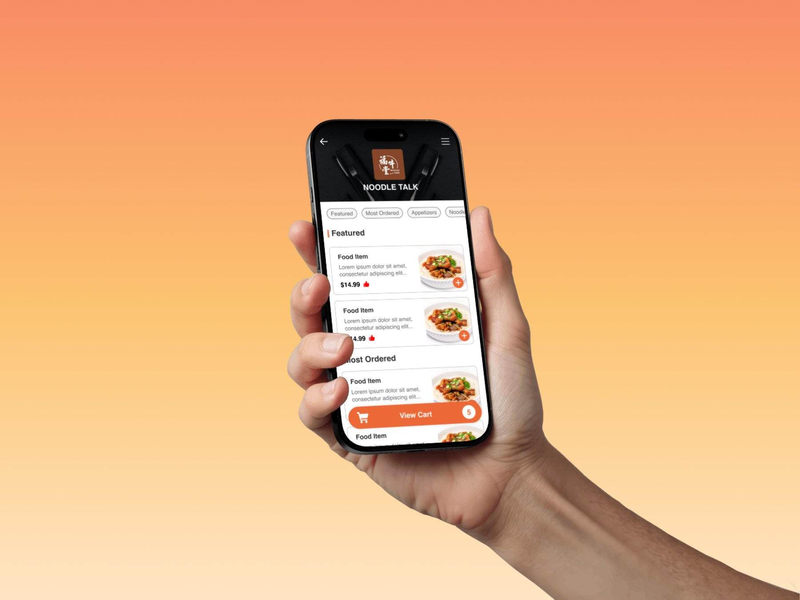
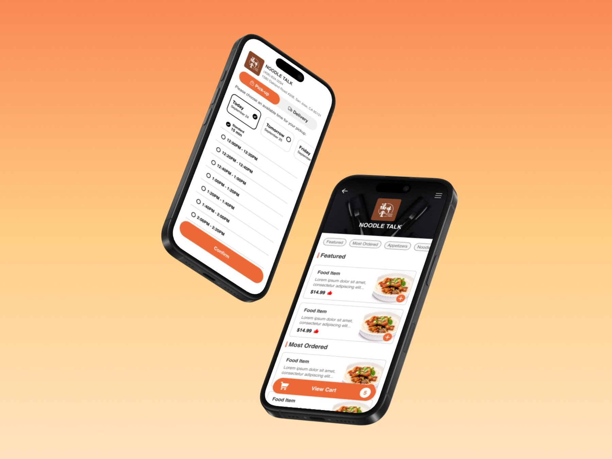
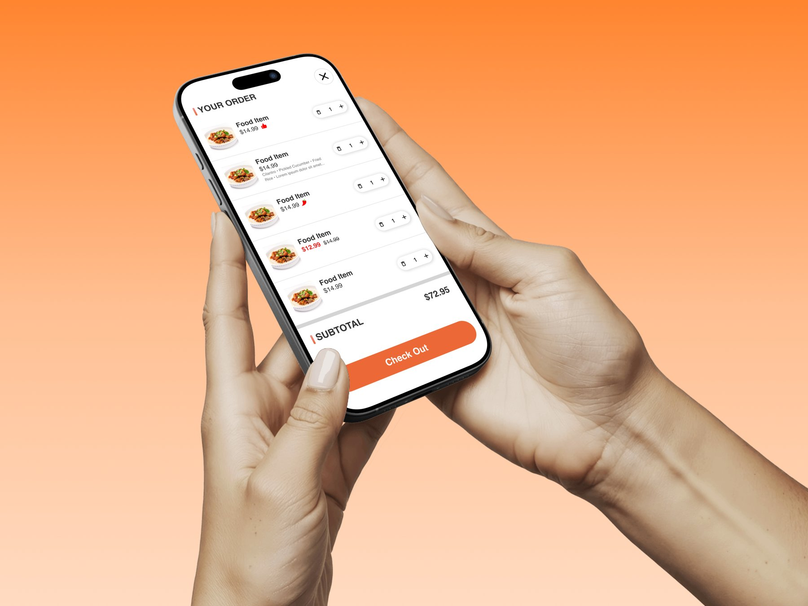
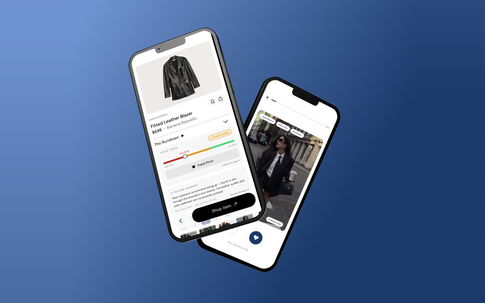
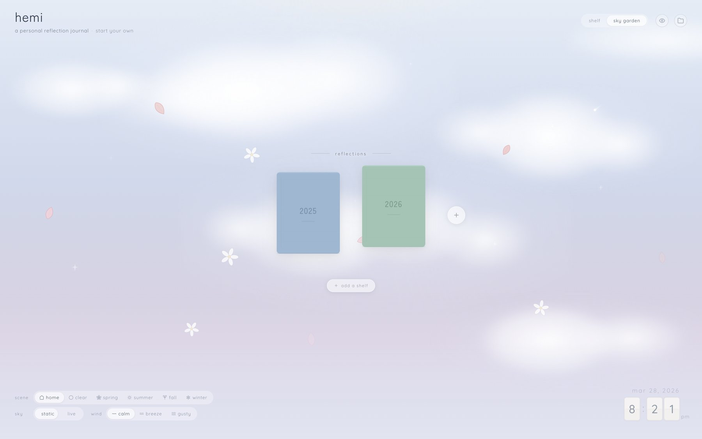

Yammii: Online Order Revamp
At a glance An independent redesign of Yammii's mobile order flow that simplified checkout from 6 to 5 steps, modernized the UI, and added navigation logic that wasn't there before.
↓ Jump to solution
Problem
Yammii is a cloud-based restaurant technology platform offering POS, QR-code ordering, and management tools for food & beverage businesses. Their existing mobile ordering flow worked functionally but felt dense, unintuitive, and visually inconsistent.
Through a heuristic evaluation using Nielsen's 10 Heuristics and competitive benchmarking against DoorDash and Uber Eats, four core issues emerged:
- Unnecessary steps in the ordering flow added friction at every screen.
- Outdated visual interface made it hard to scan and felt off-brand.
- Weak visual hierarchy meant primary actions weren't clear.
- Missing navigation logic, for example: no way to "view order" or "start over" after completing one.

Solution
A redesigned mobile order flow that addresses each of those issues through three core changes:
Final design and motion


Process
Research: Heuristic evaluation and competitive benchmarking
Since Yammii is an early-stage startup with limited resources for live user testing, I conducted a heuristic evaluation of the existing mobile flow using Nielsen's 10 Heuristics. I paired it with competitive benchmarking against DoorDash and Uber Eats to ground the findings in conventions customers already know.
Ideation: User flow and lo-fi wireframes
I started by user flow mapping (old vs proposed new) so the changes were visible at the journey level, not just per-screen. Then low-fidelity wireframes, where every design decision tied back to the four priorities: simplify, modernize, clarify hierarchy, add navigation logic.


Design: Hi-fi wireframe
I built reusable components, established consistent spacing and typography scales, and iterated on the high-fidelity wireframes in Figma. The visual system stayed close to Yammii's existing brand so returning users wouldn't feel disoriented, while the underlying flow simplifications did the work of making the experience feel new.

Reflections
Learnings
My first time redesigning a production-level mobile UI for a real company. I strengthened my ability to work systematically in Figma: reusable components, consistent spacing and type scales, designing with scalability in mind. Working without direct user feedback pushed me to lean on usability heuristics, competitive analysis, and structured design reasoning.
Challenges
The biggest constraint: lack of access to real users for usability testing. I had to be intentional about documenting design decisions and tradeoffs. Working with an existing product also raised constant questions about what could realistically change vs. what needed to stay familiar for returning users.
If I had more time
I'd extend the redesign to the desktop experience for cross-platform consistency, prioritize lightweight usability testing to validate the flow, and refine edge cases like accessibility considerations, motion, and microinteractions.
Takeaway
Strong UX design isn't about perfect conditions; it's about making thoughtful, evidence-based decisions within real-world constraints. This redesign provides a clear direction for how Yammii's mobile ordering could scale more effectively.
Other Projects

Phia: Designathon Finalist
Designing for Phia, a shopping app. Finalist work from the semifinals and finals.

AI Assistant for Google Maps
Designing an AI assistant for place discovery to reduce decision fatigue.

Hemi: A Personal Reflection Journal
Designing and vibe coding a digital journal, from sketch to deployed web app.